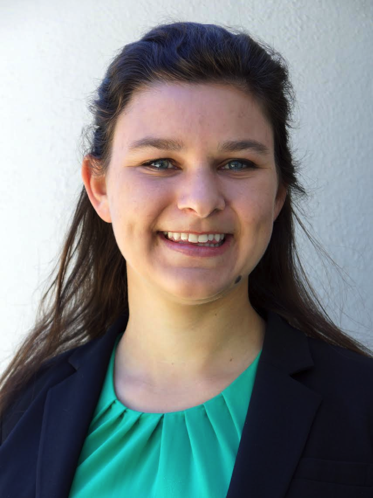
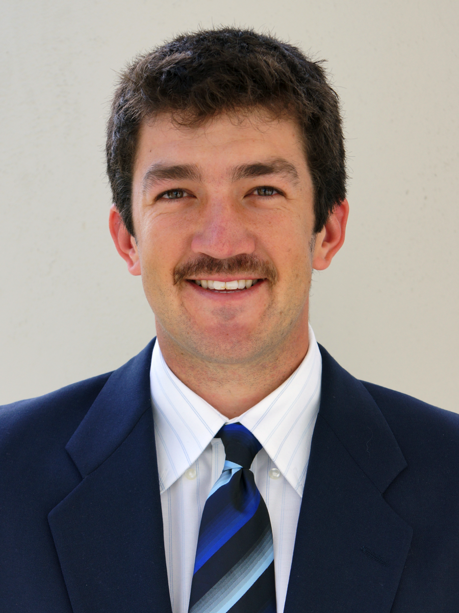
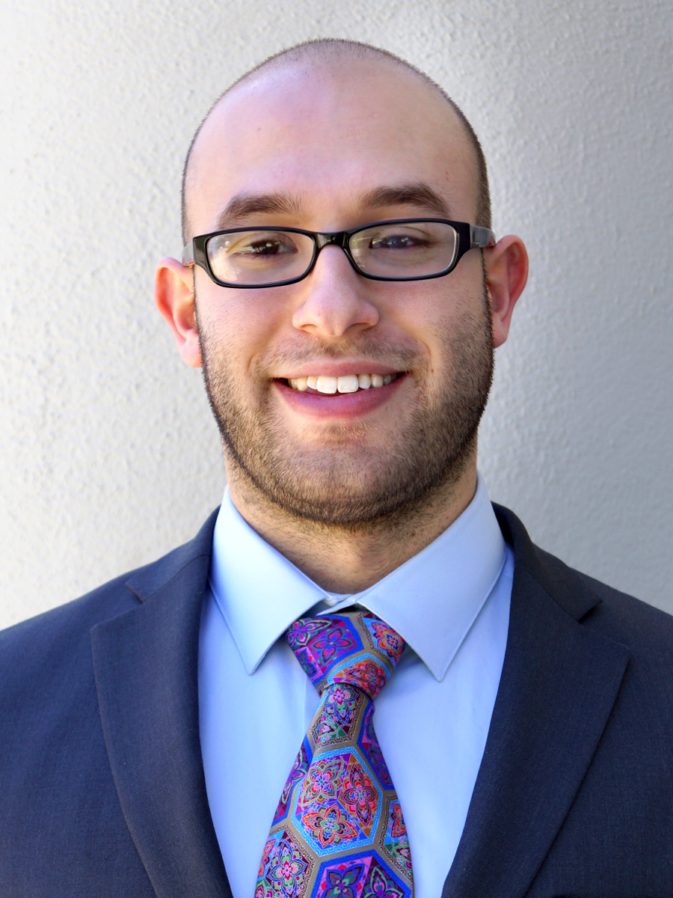
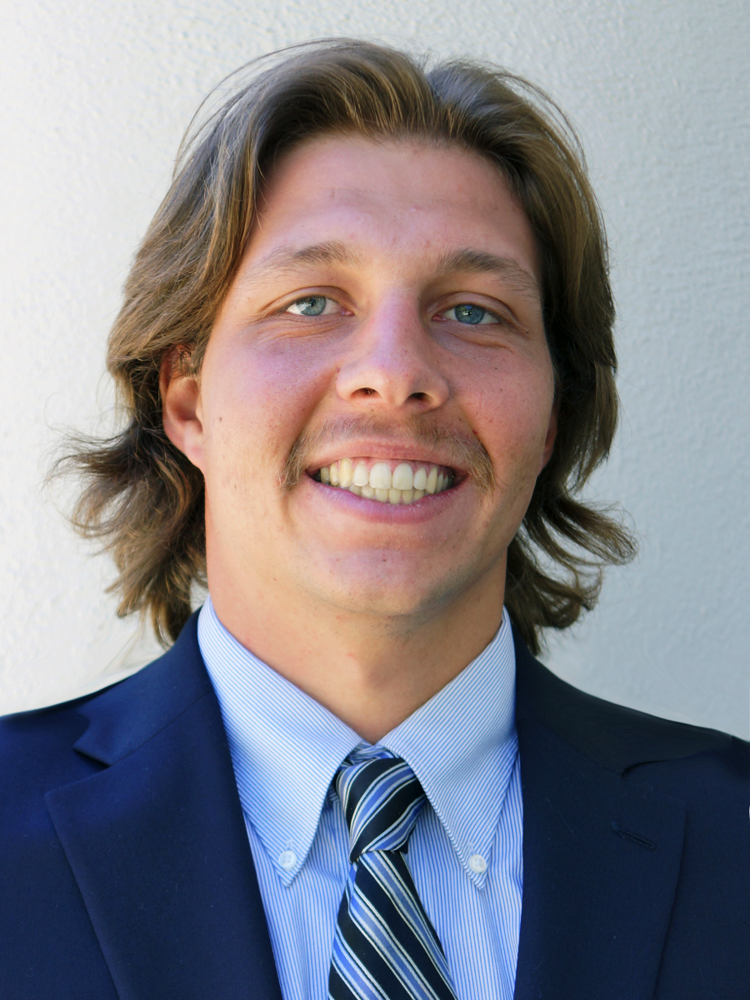
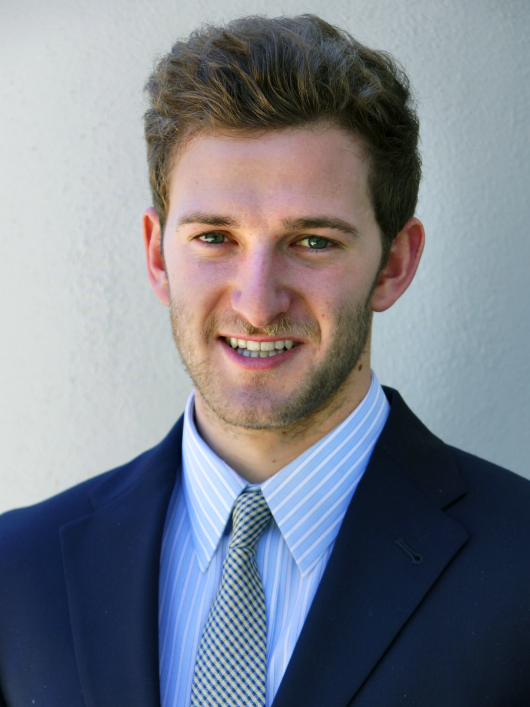
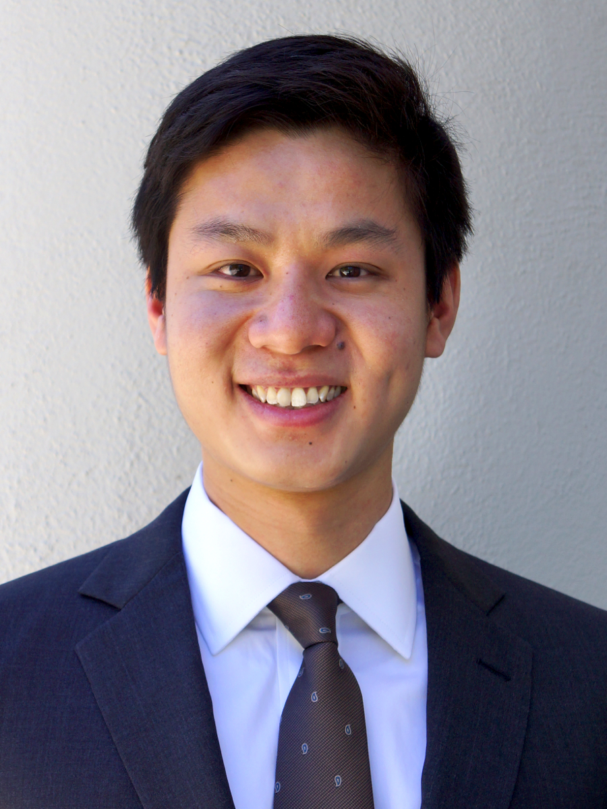
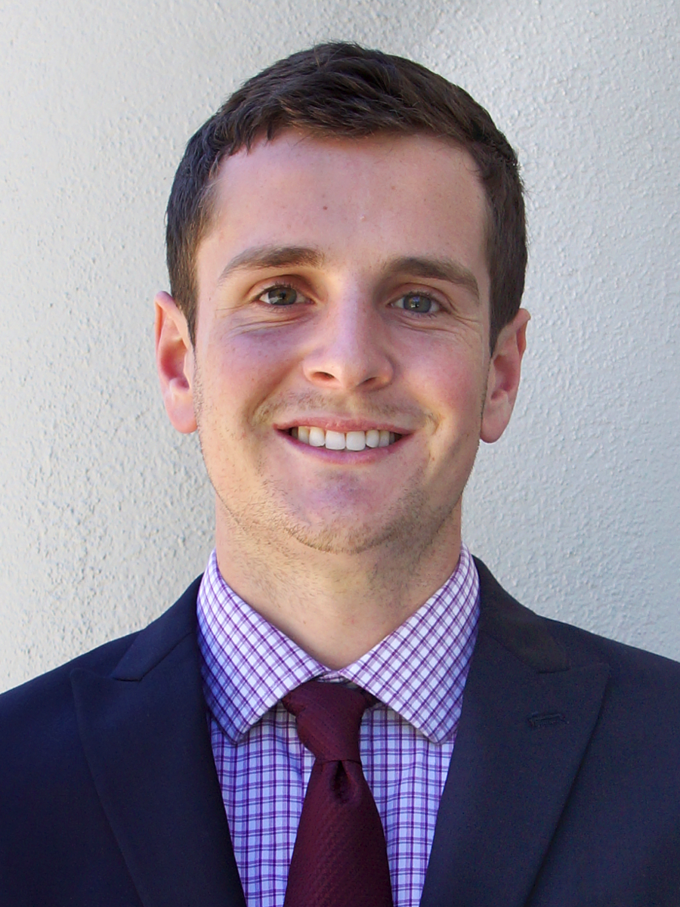
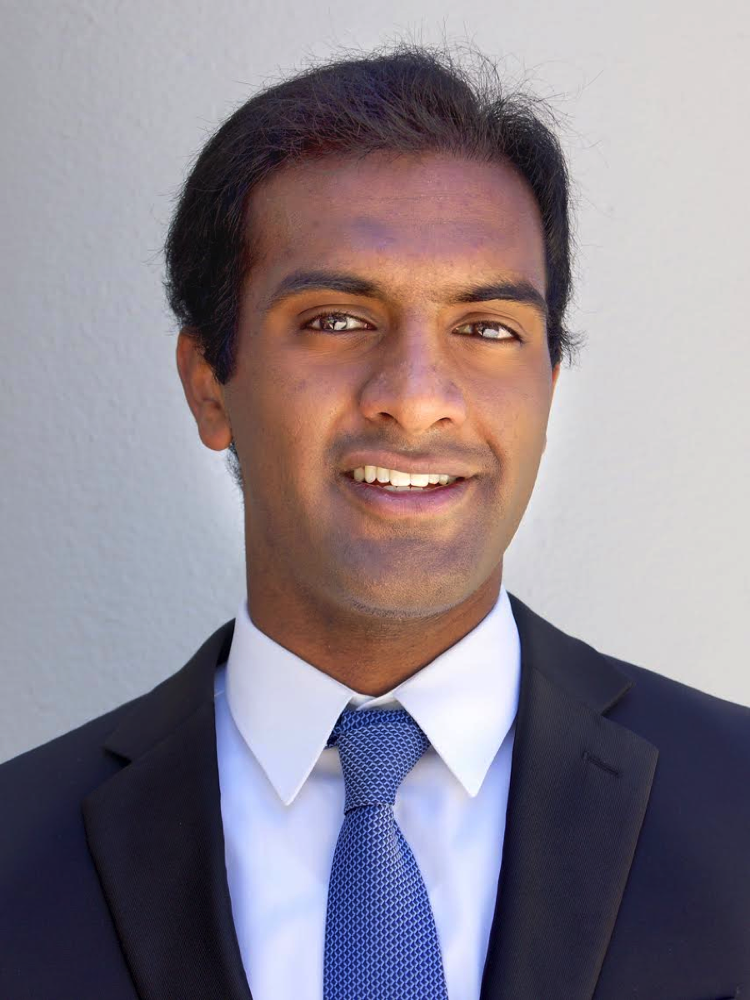
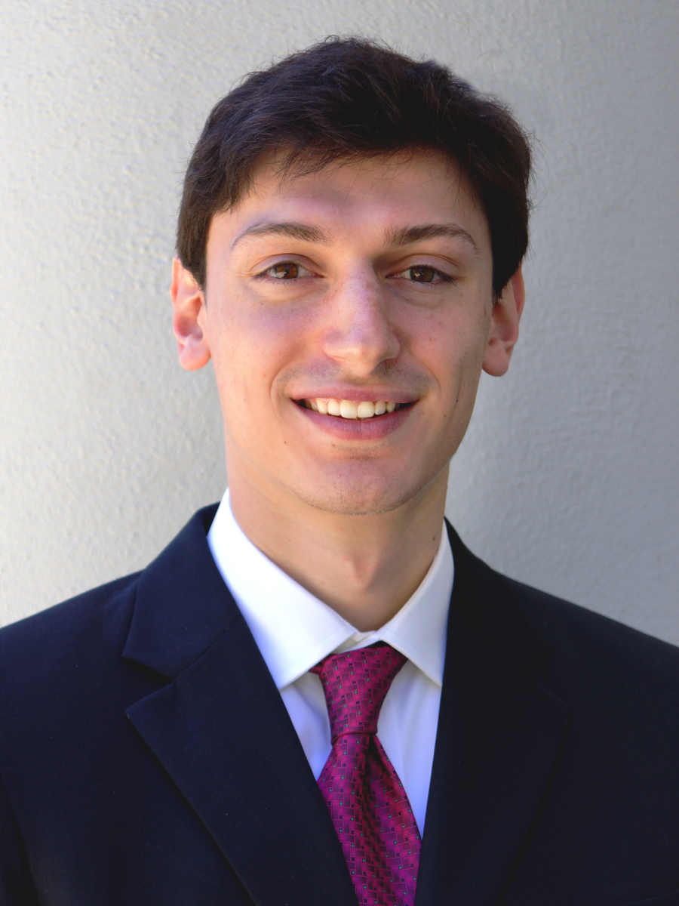
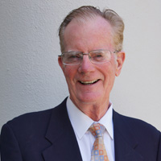

Nicole Bauthier is an avid fan of the Lord of the Rings trilogy and the award-winning author of its most popular spin-off series, Frodo and Sam: Together at Last. Having memorized the trilogy and all supplemental texts, Nicole has defeated Stephen Colbert in a Silmarillion head-to-head no fewer than five times, and her love for the novels has been declared by J.R.R. Tolkien's heirs as "the embodiment of all things excessive." Like all things in her life, Nicole's strategic decisions for DangerZone Consulting are drawn from the world of Middle-Earth and the tenets of the noble creatures that reside there. For an additional fee, she will present your strategic recommendation in Elvish (in which she is fluent) wearing authentic Elvish garb.

Travis Bowers is one of the Senior Partners at DangerZone and leads up the home furnishings division. After completing his schooling in Southern California, Mr. Bowers felt compelled to see the world and began a successful international career at ISIS. During his travels, he found himself in a wide range of situations. He has found these experiences to have toughened his skin and given him a strong ideological base for business. Mr. Bowers decided to return to the states and work for DangerZone Consulting in early 2014. Since joining the DangerZone team, Mr. Bowers has managed to steer an unprecedented 107% of his clients away from any perils the market may bring. Given his storied background, Mr. Bowers is an expert in navigating danger zones and is a firm believer that all problems can be solved using an efficient blend of analysis and creativity; his keen eye for detail gives a unique ability to steer companies clear of any hazardous path they may be traveling.

A five time winner of the Olympic Gold Medal in Biathlon, Ben Brostoff believes that the two most important characteristics for success in business, and in life, are a steely resolve and an iron will. As a business strategy expert, Mr. Brostoff applies an active personal approach to meeting clients' business needs. For example, while working for notable finance pundit Stephen Colbert, Mr. Brostoff wrestled Vladimir Putin and a bear at the same time, submitting both in fewer than thirty seconds. He currently works at DangerZone Consulting, where he employs his "soft touch strategy" to help rescue companies venturing into zones of danger.

Andrew Helgren leads up DangerZone's health care division and also advises its home furnishings and energy divisions. Throughout his distinguished career, he has successfully guided many firms away from their looming perils and towards a brighter future. Andrew believes in maintaining a strong belief in oneself and one's business in the face of adversity and emphasizes that for all situations where danger arises, there is rescue line out there and one only needs to stay calm and reach for it. He has helped steer numerous companies away from the pit of bankruptcy and put them on a path towards steady profits and financial health. In particular, as a child, he helped to save his friend's lemonade stand that had fallen on tough times by recommending relocation to a more popular street corner and by reducing the size of glasses poured. Upon implementation, profits soared to over $10 a day as business soon boomed and his friend began to franchise and dominate the neighborhood lemonade market.

Senior Vice President Harris Levin has been with DangerZone Consulting since its inception in early 2014. He is responsible for strategically advising Tesla Motors, Samsung, and Scientific Games Corporation. Prior to joining DangerZone Consulting, Harris was a frequent visitor of zones of danger throughout all seven continents, and he even discovered a very dangerous, unknown eighth continent. Years of danger have grown his beard long and bushy, while his hair remains perfectly intact. The juxtaposition of his rugged beard with his swanky hair assures clients that he is the best-suited man to lead their companies to safer, more profitable, metaphorical shores. In his free time he enjoys long walks on the beach, romantic comedies, and playing with kittens.

Jonathan is the head of the dangerous media and entertainment zones, specializing in online-streaming-monthly-subscription-based-models. Of Singaporean descent, Jonathan was first exposed to zones of danger while serving in the Singaporean military for 2 years. Taking his military expertise internationally, he subsequently dabbled in and out of danger zones as a mercenary for hire, performing wet work for a variety of organizations in Southeast Asia. Jonathan went underground for 9 months before joining Pomona College, moonlighting alternately as a barn dance choreographer and wedding worker. In his spare time, he enjoys cosmetic surgery and boxing midgets. Of his experiences in the zone, he remarked, "It's really when I'm in my danger zone that I truly feel alive, like I can harness all my energies towards accomplishing... anything".

Senior consultant Jason Machado has been assigned as lead on Sprouts Farmer's Market. Originally hailing from the Bay Area, his creativity and attention to detail make him an invaluable asset to the firm. Jason spends his free time running, skiing and saving kittens stranded in tall trees. With Mr. Machado, you will be in good hands.

Vijay is a partner at DangerZone and heads up the firm's Gaming practice. Over the course of a long and storied professional career, he has gained a wealth of experience in strategy, finance, and risk management. Though Vijay specializes in Gaming industry projects, he also finds time to provide excellent advice to clients in the Automotive and Restaurant industries. After graduation, he will depart from DangerZone (on favorable terms of course), taking his considerable talents to an investment bank in Los Angeles. In his spare time, he enjoys playing tennis, chess, and going hiking.
Anna Twum currently serves as a business analyst with DangerZone specializing in sustainability and climate change. She currently spends her free time ballroom dancing and hopes to one day complete a waltz dance campaign in the bowels of the Amazon to raise awareness on pressing environmental issues. Her combination of muscle coordination and unique understanding of torso movements contributes to her rhythmic business recommendations. Fluent in Twi, a very key language in today's global economy, Anna also presents unique local knowledge and translation services for any business interested making the strategic move into an extremely niche market. She is always looking for a challenge.

After earning his MBA from the Harvard Business School and his PsyD in Clinical Psychology from the Yale School of Medicine, John Weiss decided to make the natural jump to business strategy consulting. Due in large part to his extensive education, Mr. Weiss is able to offer each client a unique business plan to address their individual needs, as well as a personalized regimen of prescription drugs to accelerate the decision-making process. Mr. Weiss is best known in the consulting world for his implementation of reverse psychology tactics, in which he identifies and advocates the worst possible advice to clients so that they actually choose the opposite, best course of action. He joined DangerZone Consulting in January 2014 and currently works as part of the company's medical consulting team.

When she's not running ultra marathons through Death Valley, battling 9Gs as an acrobatic stunt pilot, or setting world free-diving records in the ocean depths, you can probably find former CEO of Burger King, Morgan Wesner, bulking up in her local gym. But how does this superwoman still have time to rescue your crumbling business from ruin, you might ask? Don't fault the lady for her athletic prowess, this businesswoman's physical and mental fitness, determination and boundless ambition shine just as bright from within her corner office at the firm: DangerZone Consulting. Having been raised in the northern castle tower of a Kingdom called Far-Far Away, Miss Wesner has a unique perspective to share with your company - she saved her Prince from a dragon, and she'll save your company from its fiery financial demise.
Shiwei Zhang is a Managing Associate Consultant heading DangerZone's global practice in unclean energy. Born and raised in China, Zhang brings thousands of years of Eastern philosophy to help cure financially unhealthy companies worldwide. Trained as a professional matheconomist at Pomona College, Zhang is a top expert in predicting the present and analyzing the past using complicated statistical tools. With his acute observations and thorough understanding of client situation, Zhang has prevented over a dozen dangered companies from repeating its own tragic history and guided them towards the forward track. In his free time, Zhang enjoys mentoring incoming international Chinese students on best practices of dealing with "Culinary Shock" in the US.

James Likens is the Morris B. and Gladys S. Pendleton Professor of Economics at Pomona College. He teaches courses in microeconomic theory, industrial organization and labor economics. He holds a B.A. in economics and a MBA in management from the University of California at Berkeley and took his Ph.D. in economics from the University of Minnesota. He has extensive experience working for a number of major corporations and as a business consultant. For fun he plays golf, does research on his family history and follows the Dodgers.